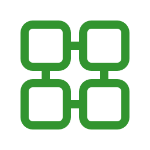
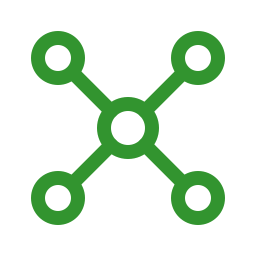
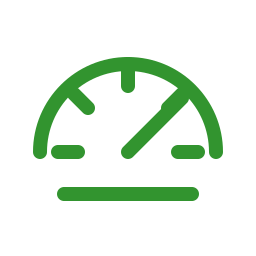
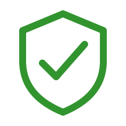

Implementación y soporte TOTVS
Parametrización, mejoras funcionales, análisis de procesos, soporte técnico y acompañamiento evolutivo para Protheus.
Consultoría TOTVS Protheus · Montevideo, Uruguay
EPIC Software acompaña empresas que necesitan estabilidad, integración y performance en procesos críticos de negocio sobre TOTVS Protheus.
Lo que hacemos
Combinamos experiencia, metodología y conocimiento real de operación para crear soluciones a medida, estables y escalables.

Parametrización, mejoras funcionales, análisis de procesos, soporte técnico y acompañamiento evolutivo para Protheus.

Conectamos Protheus con sistemas externos mediante APIs, SOAP, REST, jobs, rutinas MVC y procesos automatizados.

Diagnóstico de lentitud, queries, DBAccess, AppServer, MSSQL, rutinas críticas y optimización de ejecución.

Te ayudamos a tomar decisiones técnicas con impacto de negocio: arquitectura, estabilidad, gobierno y continuidad operativa.
Conocimiento profesional
Trabajamos sobre ambientes donde el ERP es el corazón operativo: facturación, compras, financiero, stock, integraciones fiscales, automatizaciones y procesos internos de alto impacto.
Desde Montevideo hacia la región
Atendemos proyectos en Uruguay y acompañamos operaciones en Brasil, Perú, Argentina y Colombia, con una visión regional y práctica de negocio.
Tecnología que conecta